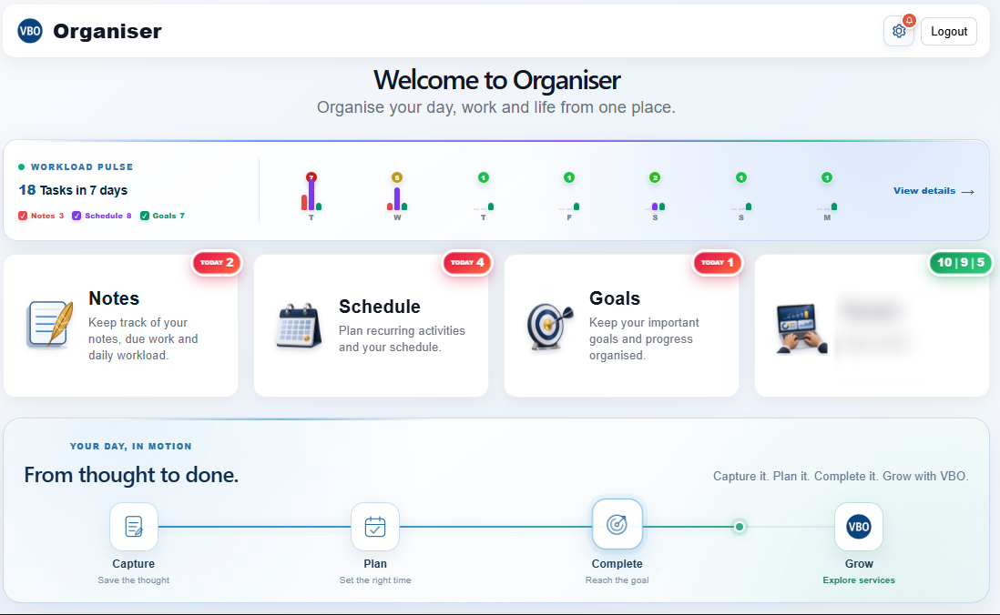

Notes that stay organized
Capture information, update notes and track due dates or completion in one place.
Keep ideas, deadlines and goals together. VBO Organiser helps you capture notes, plan schedules, follow step-by-step goals and see what needs your attention.
Open VBO OrganiserInstall VBO AppAn installable Progressive Web App (PWA). No separate APK download is required to use the web version.
A real dashboard view showing Notes, Schedule, Goals and a seven-day workload overview.

Capture information, update notes and track due dates or completion in one place.
Set up one-time or recurring schedules, review pending work and keep completion history accessible.
Import structured goal plans, follow daily actions and track completed steps and progress.
View Notes, Schedules and Goals together with a selectable date range and compact charts to understand your upcoming work.
Enable browser notifications at selected daily times when there is pending work. Delivery depends on browser, device and operating-system settings.
Use supported workspaces in the browser even during connectivity interruptions. Changes are designed to sync when connectivity returns; behavior varies by device and scenario.
Open the web app through your browser. Follow guided installation steps for supported mobile and desktop browsers.
VBO Organiser is an installable web app (PWA). Compatible browsers offer an install option or Add to Home Screen. It is not a standalone APK download from this page.
You can organize notes, schedules and structured goals, view workload summaries and configure optional reminders.
Supported workspaces are designed with offline-first storage and synchronization. Some actions require a connection, and availability depends on device, browser and current app state.
No. Notifications require supported browser/device permissions and may be affected by operating-system policies or battery settings.
Visit the guided install page, which explains steps for Android, iPhone/iPad and desktop browsers.
The personal Notes, Schedules and Goals workspaces are offered as free features. Business solutions, where activated, may have separate pricing and terms.
Yes. Sign in to your VBO Organiser account to manage your notes, schedules and goals. Some features depend on an internet connection and supported browser storage.
Start in your browser or add VBO Organiser to your home screen for convenient access.
Open VBO OrganiserInstallation Guide